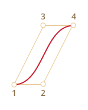
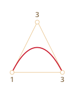
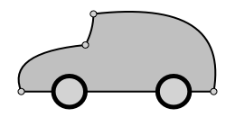
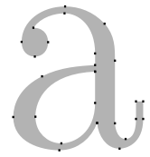
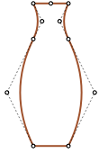
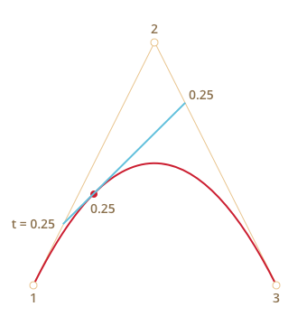
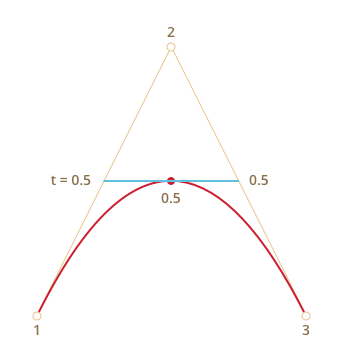

Кривые Безье используются в компьютерной графике для рисования плавных изгибов, в CSS-анимации и много где ещё.
Несмотря на «умное» название – это очень простая штука.
В принципе, можно создавать анимацию и без знания кривых Безье, но стоит один раз изучить эту тему хотя бы для того, чтобы в дальнейшем с комфортом пользоваться этим замечательным инструментом. Тем более что в мире векторной графики и продвинутых анимаций без них никак.
Виды кривых Безье
Кривая Безье задаётся опорными точками.
Их может быть две, три, четыре или больше. Например:
По двум точкам:
По трём точкам:
По четырём точкам:
Если вы посмотрите внимательно на эти кривые, то «на глазок» заметите:
-
Точки не всегда на кривой. Это совершенно нормально, как именно строится кривая мы рассмотрим чуть позже.
-
Степень кривой равна числу точек минус один. Для двух точек – это линейная кривая (т.е. прямая), для трёх точек – квадратическая кривая (парабола), для четырёх – кубическая.
-
Кривая всегда находится внутри выпуклой оболочки, образованной опорными точками:
 
Благодаря последнему свойству в компьютерной графике можно оптимизировать проверку пересечений двух кривых. Если их выпуклые оболочки не пересекаются, то и кривые тоже не пересекутся.
Основная ценность кривых Безье для рисования – в том, что, двигая точки, кривую можно менять, причём кривая при этом меняется интуитивно понятным образом.
Попробуйте двигать точки мышью в примере ниже:
Как можно заметить, кривая натянута по касательным 1 → 2 и 3 → 4.
После небольшой практики становится понятно, как расположить точки, чтобы получить нужную форму. А, соединяя несколько кривых, можно получить практически что угодно.
Вот некоторые примеры:
  
Математика
У кривых Безье есть математическая формула.
Как мы увидим далее, для пользования кривыми Безье знать её нет особенной необходимости, но для полноты картины – вот она.
Координаты кривой описываются в зависимости от параметра t⋲[0,1]
-
Для двух точек:
P = (1-t)P1 + tP2 -
Для трёх точек:
P = (1−t)2P1 + 2(1−t)tP2 + t2P3 -
Для четырёх точек:
P = (1−t)3P1 + 3(1−t)2tP2 +3(1−t)t2P3 + t3P4
Вместо Pi нужно подставить координаты i-й опорной точки (xi, yi).
Эти уравнения векторные, то есть для каждой из координат:
x = (1−t)2x1 + 2(1−t)tx2 + t2x3y = (1−t)2y1 + 2(1−t)ty2 + t2y3
Вместо x1, y1, x2, y2, x3, y3 подставляются координаты трёх опорных точек, и в то время как t пробегает множество от 0 до 1, соответствующие значения (x, y) как раз и образуют кривую.
Впрочем, это чересчур наукообразно, не очень понятно, почему кривые именно такие, и как зависят от опорных точек. С этим нам поможет разобраться другой, более наглядный алгоритм.
Рисование «де Кастельжо»
Метод де Кастельжо идентичен математическому определению кривой и наглядно показывает, как она строится.
Посмотрим его на примере трёх точек (точки можно двигать). Нажатие на кнопку «play» запустит демонстрацию.
Алгоритм построения кривой по «методу де Кастельжо»:
-
Рисуем опорные точки. В примере выше это
1,2,3. -
Строятся отрезки между опорными точками 1 → 2 → 3. На рисунке выше они коричневые.
-
Параметр
tпробегает значения от0до1. В примере выше использован шаг0.05, т.е. в цикле0, 0.05, 0.1, 0.15, ... 0.95, 1.Для каждого из этих значений
t:-
На каждом из коричневых отрезков берётся точка, находящаяся от начала на расстоянии от 0 до
tпропорционально длине. Так как коричневых отрезков – два, то и точек две штуки.Например, при
t=0– точки будут в начале, приt=0.25– на расстоянии в 25% от начала отрезка, приt=0.5– 50%(на середине), приt=1– в конце отрезков. -
Эти точки соединяются. На рисунке ниже соединяющий их отрезок изображён синим.
-
При t=0.25 |
При t=0.5 |
|---|---|
|  |  |
-
На получившемся отрезке берётся точка на расстоянии, соответствующем
t. То есть, дляt=0.25(первый рисунок) получаем точку в конце первой четверти отрезка, дляt=0.5(второй рисунок) – в середине отрезка. На рисунках выше эта точка отмечена красным. -
По мере того как
tпробегает последовательность от0до1, каждое значениеtдобавляет к красной кривой точку. Совокупность таких точек для всех значенийtобразуют кривую Безье.
Это был процесс для построения по трём точкам. Но то же самое происходит и с четырьмя точками.
Демо для четырёх точек (точки можно двигать):
Алгоритм:
- Точки по порядку соединяются отрезками: 1 → 2, 2 → 3, 3 → 4. Получается три коричневых отрезка.
- На отрезках берутся точки, соответствующие текущему
t, соединяются. Получается два зелёных отрезка. - На этих отрезках берутся точки, соответствующие текущему
t, соединяются. Получается один синий отрезок. - На синем отрезке берётся точка, соответствующая текущему
t. При запуске примера выше она красная. - Эти точки описывают кривую.
Этот алгоритм рекурсивен. Для каждого t из интервала от 0 до 1 по этому правилу, соединяя точки на соответствующем расстоянии, из 4 отрезков делается 3, затем из 3 так же делается 2, затем из 2 отрезков – точка, описывающая кривую для данного значения t.
Нажмите на кнопку «play» в примере выше, чтобы увидеть это в действии.
Ещё примеры кривых:
С другими точками:
Петелька:
Пример негладкой кривой Безье:
Так как алгоритм рекурсивен, то аналогичным образом могут быть построены кривые Безье и более высокого порядка: по пяти точкам, шести и так далее. Однако на практике они менее полезны. Обычно используются 2-3 точки, а для сложных линий несколько кривых соединяются. Это гораздо проще с точки зрения поддержки и расчётов.
В задаче построения кривой Безье используются «опорные точки». Они, как можно видеть из примеров выше, не лежат на кривой. Точнее говоря, только первая и последняя лежат на кривой, а промежуточные – нет.
Иногда возникает другая задача: провести кривую именно через нужные точки, чтобы все они лежали на некой плавной кривой, удовлетворяющей определённым требованиям. Такая задача называется интерполяцией, и здесь мы её не рассматриваем.
Существуют математические формулы для таких построений, например многочлен Лагранжа.
Как правило, в компьютерной графике для построения плавных кривых, проходящих через несколько точек, используют кубические кривые, плавно переходящие одна в другую. Это называется интерполяция сплайнами.
Итого
Кривые Безье задаются опорными точками.
Мы рассмотрели два определения кривых:
- Через математическую формулу.
- Через процесс построения де Кастельжо.
Их удобство в том, что:
- Можно легко нарисовать плавные линии вручную, передвигая точки мышкой.
- Более сложные изгибы и линии можно составить, если соединить несколько кривых Безье.
Применение:
- В компьютерной графике, моделировании, в графических редакторах. Шрифты описываются с помощью кривых Безье.
- В веб-разработке – для графики на Canvas или в формате SVG. Кстати, все живые примеры выше написаны на SVG. Фактически, это один SVG-документ, к которому точки передаются параметрами. Вы можете открыть его в отдельном окне и посмотреть исходник: demo.svg.
- В CSS-анимации, для задания траектории или скорости передвижения.
{kind=link}
Комментарии
<code>, для нескольких строк кода — тег<pre>, если больше 10 строк — ссылку на песочницу (plnkr, JSBin, codepen…)